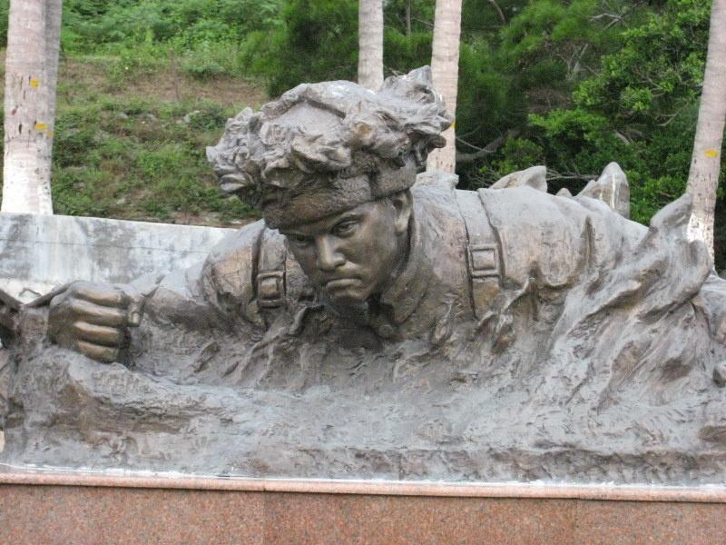
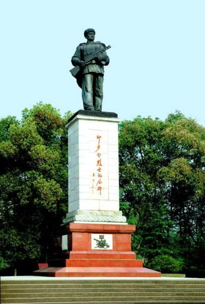
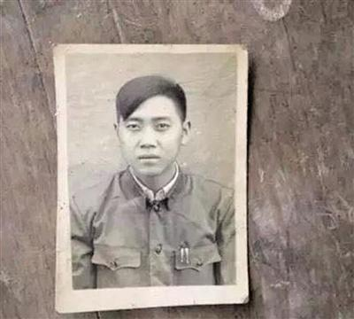
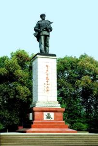
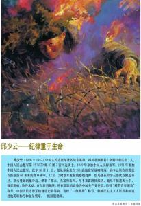

相关图片
- 
- 
- 
战后，为了表彰邱少云崇高的集体主义精神和顽强的革命意志，所在军党委根据他生前意愿，被追认为中国共产党党员，并追授模范青年团员称号。
1952年11月6日，中国人民志愿军领导机关给他追记特等功。
1953年6月1日，追授他“中国人民志愿军一级英雄”称号。同年6月25日，朝鲜民主主义共和国最高人民议会常务委员会授予“朝鲜民主主义人民共和国英雄”称号，同时授予金星勋章、一级国旗勋章，并将邱少云的名字刻在金化西面的391高地石壁上：“为整体、为胜利而牺牲的伟大的战士邱少云同志永垂不朽。”
中国人民赴朝慰问团文艺工作团赠给特等功臣邱少云烈士锦旗上写道：“献给中国人民志愿军伟大战士邱少云永垂不朽”。
志愿军第15军全体指战员献给邱少云 烈士家属的锦旗上写道：“祖国人民的光荣”。
四川省人民政府和四川省抗美援朝分会给邱少云烈士家属的锦旗上写道：“光荣之家”。
四川省军区司令部、政治部给邱少云烈士的家属的锦旗上写道：“伟大人民的战士，英雄不朽的功绩”。
2009年9月14日，他被评为100位新中国成立以来感动中国人物之一。
2018年9月，中央军委政治工作部统一印制张思德、董存瑞、黄继光、邱少云、雷锋、苏宁、李向群、杨业功、林俊德、张超10位挂像英模画像，并下发至全军连级以上单位。